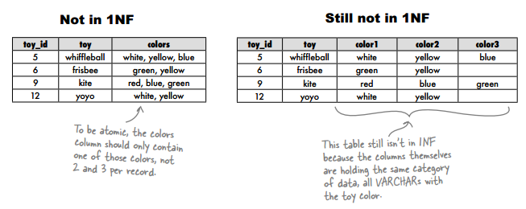
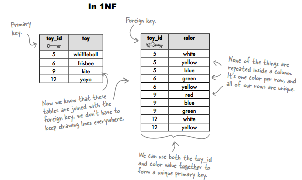

Xây dựng Data warehouse & Data Mart#
Khi xây dựng Data Model, có 2 loại bảng chính: Dim & Fact
Fact table: Ghi nhận kết quả như bán hàng, tồn kho,... Fact table có các tính chất:
Additive - như số lượng đơn hàng. Tổng số hàng cả nước là tổng số hàng mỗi đơn vị
Semi-additive - Số lượng khách hàng trong cả nước ko hẳn là tổng số khách hàng mỗi đơn vị do 1 khách hàng có thể thuộc nhiều đơn vị
Non-additive - Tỷ lệ phần trăm lợi nhuận của toàn hàng không phải là tổng tỷ lệ phần trăm lợi nhuận mỗi đơn vị
Dimension: Là chiều để tổng hợp fact - Granularity: Là độ chi tiết của dimension. VD: Chi nhánh < Thành phố < Vùng - Slow changing dimension: Các dimension có thể thay đổi theo thời gian. VD: Khi mở thêm chi nhánh, sẽ có thêm dimension Branch_name. Đối với loại này, cần có thểm thông tin effective date - Time dimension: Loại dimension rất đặc biệt, có thể có các dạng sau: - Theo lịch: Year > Month > Date hoặc Year > Month > Week > Weekday > Date - Theo năm tài chính: Fiscal year
Time dimension có thể làm như sau:
library(dplyr)
library(lubridate)
datekey <- 20160101:20160130
data <- data.frame(datekey = datekey)
data <- data %>%
mutate(date = ymd(datekey)) %>%
mutate(year = year(date),
quarter = quarter(date),
month = month(date),
month_name = month(date, label = T, abbr = F),
day_of_month = day(date),
day_of_week = wday(date),
day_name = wday(date, label = T, abbr = F)
)
DT::datatable(data)
Script tạo thông tin bảng:
drop table if exists dimDate
--Step1: Tạo DimDate table
CREATE TABLE [dbo].[DimDate](
[DateKey] [int] NOT NULL,
[DateFullName] [varchar](50) NULL,
[DateFull] [date] NULL,
[Year] [int] NULL,
[Quarter] [int] NULL,
[QuarterName] [varchar](50) NULL,
[QuarterKey] [int] NULL,
[Month] [int] NULL,
[MonthKey] [int] NULL,
[MonthName] [varchar](50) NULL,
[DayOfMonth] [int] NULL,
[NumberOfDaysInTheMonth] [int] NULL,
[DayOfYear] [int] NULL,
[WeekOfYear] [int] NULL,
[WeekOfYearKey] [int] NULL,
[ISOWeek] [int] NULL,
[ISOWeekKey] [int] NULL,
[WeekDay] [int] NULL,
[WeekDayName] [varchar](50) NULL,
[FiscalYear] [int] NULL,
[FiscalQuarter] [int] NULL,
[FiscalQuarterKey] [int] NULL,
[FiscalMonth] [int] NULL,
[FiscalMonthKey] [int] NULL,
[IsWorkDayKey] [int] NULL,
[IsWorkDayDescription] [varchar](50) NULL,
[IsPublicHolidayKey] [int] NULL,
[IsPublicHolidayDescription] [varchar](50) NULL,
CONSTRAINT [PK_DimDate] PRIMARY KEY CLUSTERED
(
[DateKey] ASC
)WITH (PAD_INDEX = OFF, STATISTICS_NORECOMPUTE = OFF, IGNORE_DUP_KEY = OFF, ALLOW_ROW_LOCKS = ON, ALLOW_PAGE_LOCKS = ON) ON [PRIMARY]
) ON [PRIMARY]
--Step 2: Tạo các biến date
declare @CurrentDate date
declare @FiscalYearStartMonth int
declare @WeeklyHolidays table ([WeekDay] int) -- weekday, sunday is 1 and saturday is 7
declare @AnnulPublicHolidays table([Date] int) -- int in YYYYMMDD format
declare @FirstDate date
declare @NumberOfYearsToGenerate int
declare @LastDate date
set @FirstDate='1990-01-01'
set @NumberOfYearsToGenerate=40
-- do not change line below
set @LastDate=DATEADD(YEAR,@NumberOfYearsToGenerate,@FirstDate)
set @CurrentDate=@FirstDate
set @FiscalYearStartMonth=7
-- insert weekly holidays
insert into @WeeklyHolidays([WeekDay]) values(1) -- sunday
insert into @WeeklyHolidays([WeekDay]) values(7) -- saturday
-- insert annual public holidays
insert into @AnnulPublicHolidays([Date]) values(20130101) -- New Year's Day
insert into @AnnulPublicHolidays([Date]) values(20130102) -- Day after New Year's Day
insert into @AnnulPublicHolidays([Date]) values(20130430) -- Day after New Year's Day
insert into @AnnulPublicHolidays([Date]) values(20130501) -- Day after New Year's Day
insert into @AnnulPublicHolidays([Date]) values(20130902) -- Day after New Year's Day
-- Step 3: Chạy vòng lặp
while(@CurrentDate<@LastDate)
begin
INSERT INTO [dbo].[DimDate]
([DateKey]
,[DateFullName]
,[DateFull]
,[Year]
,[Quarter]
,[QuarterName]
,[QuarterKey]
,[Month]
,[MonthKey]
,[MonthName]
,[DayOfMonth]
,[NumberOfDaysInTheMonth]
,[DayOfYear]
,[WeekOfYear]
,[WeekOfYearKey]
,[ISOWeek]
,[ISOWeekKey]
,[WeekDay]
,[WeekDayName]
,[FiscalYear]
,[FiscalQuarter]
,[FiscalQuarterKey]
,[FiscalMonth]
,[FiscalMonthKey]
,[IsWorkDayKey]
,[IsWorkDayDescription]
,[IsPublicHolidayKey]
,[IsPublicHolidayDescription])
select
convert(int,convert(varchar(8),@CurrentDate,112)) as [DateKey],
convert(varchar(max),@CurrentDate,106) as [DateFullName],
@CurrentDate as [DateFull],
datepart(year,@CurrentDate) as [Year],
datepart(QUARTER,@CurrentDate) as [Quarter],
'QTR '+datename(QUARTER,@CurrentDate) as [QuarterName],
convert(int,datename(year,@CurrentDate)+datename(QUARTER,@CurrentDate)) as [QuarterKey],
datepart(month,@CurrentDate) as [Month],
convert(int,datename(year,@CurrentDate)+right('0'+convert(varchar(2),datepart(month,@CurrentDate)),2)) as [MonthKey],
datename(month,@CurrentDate) as [MonthName],
datepart(day,@CurrentDate) as [DayOfMonth],
datepart(day,EOMONTH(@CurrentDate)) as [NumberOfDaysInTheMonth],
datepart(DAYOFYEAR,@CurrentDate) as [DayOfYear],
datepart(WEEK,@CurrentDate) as [WeekOfYear],
datename(year,@CurrentDate)+right('0'+datename(week,@CurrentDate),2) as [WeekOfYearKey],
datepart(ISO_WEEK,@CurrentDate) as [ISOWeek],
datename(year,@CurrentDate)+right('0'+convert(varchar(2),datepart(ISO_WEEK,@CurrentDate)),2) as [ISOWeekKey],
datepart(WEEKDAY,@CurrentDate) as [WeekDay],
datename(WEEKDAY,@CurrentDate) as [WeekDayName],
case when month(@CurrentDate)<@FiscalYearStartMonth then year(@CurrentDate) else year(@CurrentDate)+1 end as [FiscalYear],
ceiling(convert(float,(case when month(@CurrentDate)=13-@FiscalYearStartMonth then 12 else ((@FiscalYearStartMonth-1)+month(@CurrentDate))%12 end))/3) as [FiscalQuarter],
convert(varchar(4),case when month(@CurrentDate)<@FiscalYearStartMonth then year(@CurrentDate) else year(@CurrentDate)+1 end)
+
convert(varchar(1),ceiling(convert(float,(case when month(@CurrentDate)=13-@FiscalYearStartMonth then 12 else ((@FiscalYearStartMonth-1)+month(@CurrentDate))%12 end))/3))
as [FiscalQuarterKey],
case when month(@CurrentDate)=13-@FiscalYearStartMonth then 12 else ((@FiscalYearStartMonth-1)+month(@CurrentDate))%12 end as [FiscalMonth],
convert(varchar(4),case when month(@CurrentDate)<@FiscalYearStartMonth then year(@CurrentDate) else year(@CurrentDate)+1 end)
+
right('0'+convert(varchar(2),case when month(@CurrentDate)=13-@FiscalYearStartMonth then 12 else ((@FiscalYearStartMonth-1)+month(@CurrentDate))%12 end),2)
as [FiscalMonthKey],
case when datepart(WEEKDAY,@CurrentDate) in (select [weekday] from @WeeklyHolidays) then 1 else 0 end as [IsWorkDayKey],
case when datepart(WEEKDAY,@CurrentDate) in (select [weekday] from @WeeklyHolidays) then 'Weekend' else 'Workday' end as [IsWorkDayDescription],
case when convert(int,convert(varchar(8),@CurrentDate,112)) in (select [Date] from @AnnulPublicHolidays) then 1 else 0 end as [IsPublicHolidayKey],
case when convert(int,convert(varchar(8),@CurrentDate,112)) in (select [Date] from @AnnulPublicHolidays) then 'Holiday' else 'Non Holiday' end as [IsPublicHolidayDescription]
set @CurrentDate=dateadd(day,1,@CurrentDate)
end
Cấu trúc xây dựng có 2 dạng chính: Star schema hoặc Snow schema. Việc lựa chọn cấu trúc tùy thuộc vào performance
Xây dựng bảng#
Atomic data#
Atomic data: Là một thông tin không thể/hoặc không nên chia nhỏ hơn. VD
Non-atomic
+-----+-----------------------------+ | ID | Street | +=====+=============================+ | 123 | 89 Lang Ha, Dong Da, Ha Noi | +-----+-----------------------------+
Atomic
+----------+---------+---------+-----------------+ | ID | No | Street | District City | +==========+=========+=========+=================+ | 123 89 | Lang Ha | Dong Da | Hanoi | +----------+---------+---------+-----------------+
Phương pháp xác định Atomic Data
Một bảng atomic không thể có nhiều giá trị thuộc cùng 1 loại trong cột
VD:
+-----------+------------------+ | food_name | ingredients | +===========+==================+ | bread | flour, milk, egg | +-----------+------------------+
Một bảng atomic không thể có nhiều column thuộc cùng 1 loại
+---------+-----------+-----------+ | teacher | student_1 | student_2 | +=========+===========+===========+ | D.Anh | Trang | Ha | +---------+-----------+-----------+
Primary key#
Primary key là cột khiến mỗi bản ghi (record) duy nhất
Quy tắc:
Không được NULL
Mỗi khi ghi thêm một record, phải có thêm một giá trị của primary key
Là duy nhất
Không được thay đổi
Bảng chứa primary key được sử dụng làm foreign key ở bảng khác được gọi là bảng mẹ (parent table), bảng kia được gọi là bảng con (child table)
Các bảng được xây dựng dựa trên nguyên tắc Atomic Datađược gọi là NF1 (First Normal Form)
Xây dựng database#
Tạo constraint để join các bảng: Việc này sẽ cho phép đảm bảo tính toàn vẹn của cơ sở dữ liệu
use tempdb
drop table if exists test1
create table test1
(id int not null primary key,
name varchar(10))
create table test2
(id_new int not null,
CIF int not null ,
job varchar(10),
constraint id_key
foreign key (id_new)
references test1(id))
Các kiểu quan hệ:
Quan hệ 1-1: Một dòng trong bảng join với 1 dòng trong bảng khác. VD: Customer vs. Customer_contact, nguyên tắc 1-1, join với nhau bằng Customer_ID
Quan hệ 1-n: Một dòng join với nhiều dòng khác. VD: 1 khách hàng có thể có nhiều giao dịch
Quan hệ n-n: Một dòng có thể join với nhiều dòng và ngược lại. VD: Một phụ nữ có thể mua nhiều loại giày và một loại giày (shoes_id) có thể được mua bởi nhiều người phụ nữ
Trick: Sử dụng junction table để làm proxy với mối quan hệ n-n. Ví dụ:

Nguyên tắc ATOMIC data đặc biệt quan trọng khi xây dựng bảng. Nếu 1 bảng không tuân thủ nguyên tắc đó thì phải chia nhỏ thành nhiều bảng.
 
Composite key: Key được tạo từ 2 hoặc nhiều cột
2NF: 1NF là 2NF nếu tất cả các cột trong bảng là MỘT PHẦN của Primary key hoặc có một cột primary key duy nhất